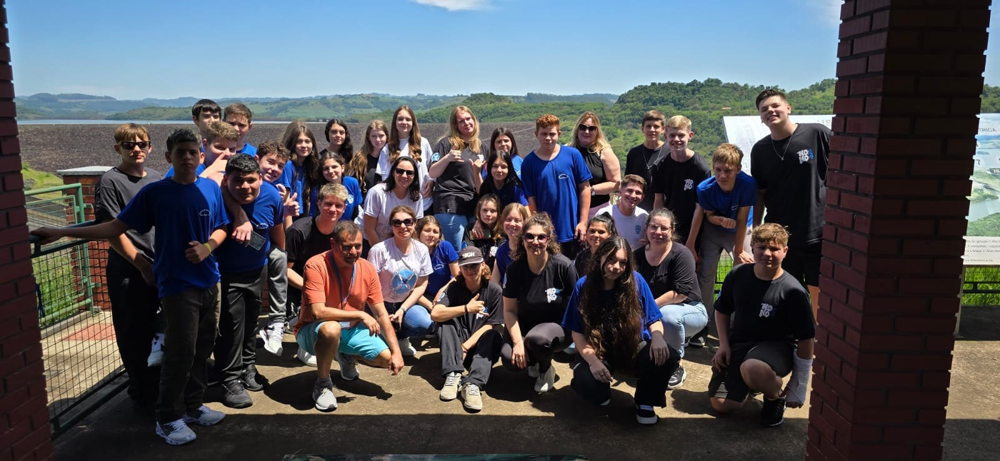
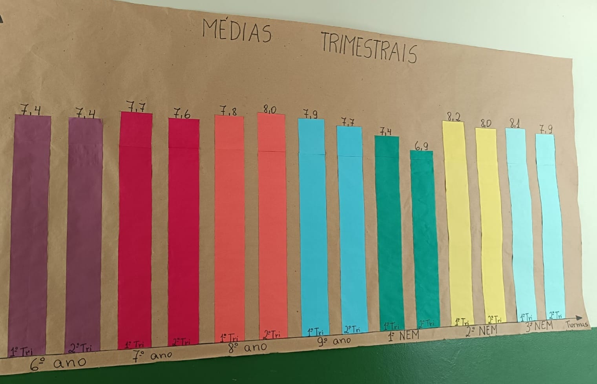

Estudantes dos Anos Finais realizam viagem de estudo interdisciplinar a Itá e Seara/SC
3 de outubro às 16:36

Os estudantes do 8º e 9º ano – Anos Finais do Ensino Fundamental, com os professores, realizam viagem de estudo, com o objetivo de proporcionar uma experiência educacional interdisciplinar e enriquecedora, aliando o aprendizado teórico e prático sobre a história, cultura, geografia, economia e meio ambiente de Itá e Seara/SC, promovendo a conscientização ambiental e cultural, bem como, a integração social dos estudantes.
9º Ano Apresenta "O Rei da Vela" e Explora Crítica Social do Brasil dos Anos 1930
3 de outubro às 16:36
Na última terça-feira, dia 01 de outubro, a turma do 9º ano, apresentou um fragmento da peça teatral “O Rei da Vela”, escrita em 1930 por Oswald de Andrade.
A peça é uma crítica à sociedade e à política de um Brasil que vivia a crise do café e as consequências da quebra da Bolsa de valores em Nova York em 1929. A atividade foi proposta pelas professoras Nádia Zacaron e Catiane Spironello a fim de desenvolver as seguintes habilidades:
Identificar e analisar diferentes estilos cênicos, contextualizando-os no tempo e no espaço de modo a aprimorar a capacidade de apreciação da estética teatral.
Reconhecer e apreciar artistas e grupos de teatro brasileiros e estrangeiros de diferentes épocas, investigando os modos de criação, produção, divulgação, circulação e organização da atuação profissional em teatro.
Estudantes Criam Gráficos de Médias Aritméticas em Atividade de Matemática
17 de setembro às 14:51

Como forma de reflexão sobre o desempenho dos estudantes e das turmas, no Componente Currícular de Matemática, a professora Márcia Giongo, juntamente com os estudantes, realizaram a confecção de um gráfico, onde estão representadas as médias aritméticas de cada turma.
Sendo que, cada estudante realizou a confecção do gráfico de suas médias aritméticas trimestrais.